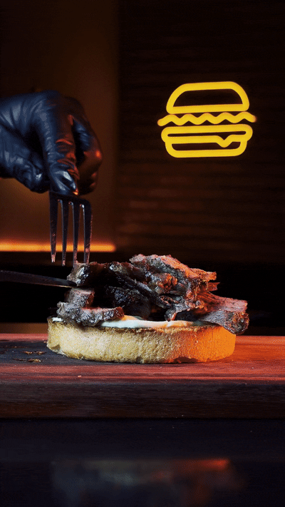
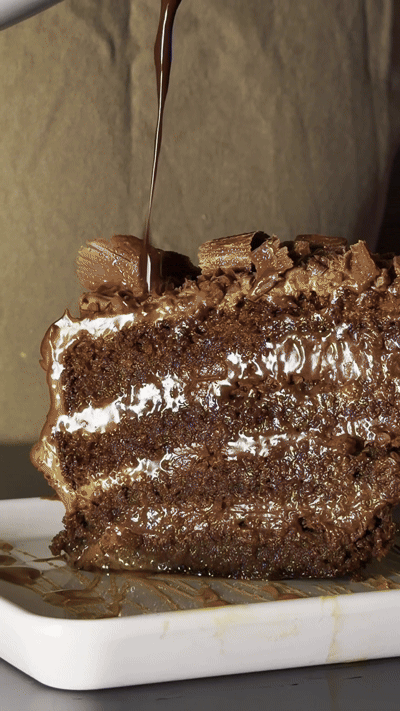
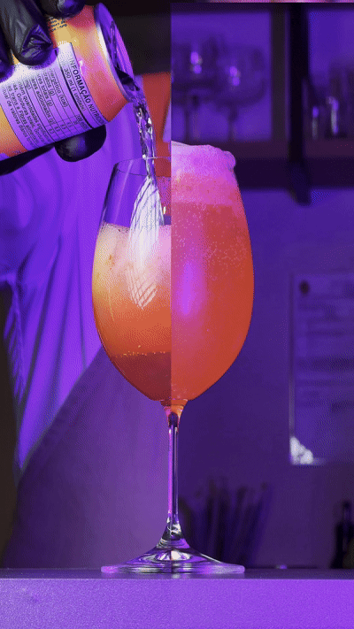
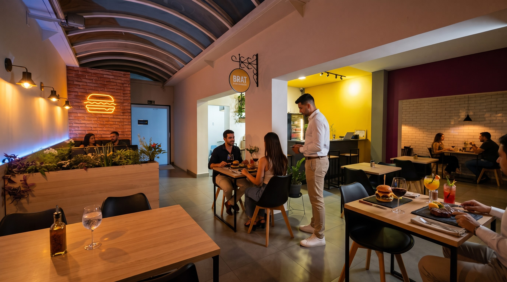
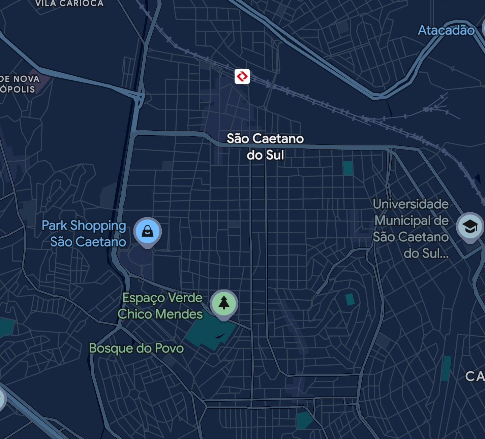

Cortes nobres. Frigideira de ferro. O seu refúgio em São Caetano. Isso é Brat.
Não criamos pratos para seguir tendências. Criamos receitas que exigiram anos de estudo, matemática e testes exaustivos para entregar sabor de verdade na sua mesa.
Tiras suculentas de baby beef grelhadas no ponto, coroadas pelo nosso Melt de provolone artesanal. O equilíbrio exato entre a intensidade da defumação e a fusão perfeita do queijo tostado na frigideira de ferro, servido no pão brioche selado na manteiga. A máxima expressão da nossa cozinha.
Uma década aperfeiçoando a massa e a densidade do chocolate. Fatia generosa e aveludada, servida com cascata de ganache quente direto à mesa e bolas de sorvete para o contraste perfeito. Feito para encerrar a sua noite sem concessões.
Esqueça o barulho das praças de alimentação. Na Rua Amazonas, criamos um refúgio com iluminação acolhedora, taças de cristal, mesa posta e som na medida certa. O cenário perfeito para dates, casais e conversas que merecem tempo.

Burgers artesanais de cortes nobres, pratos à la carte, coquetelaria autoral (como o Brat Kiss) e entradas pensadas para compartilhar.
"Melhor hambúrguer da região disparado. O atendimento e o ambiente são impecáveis para jantar a dois."
"O Matilda Cake com a ganache quente é uma experiência à parte. Nota 10 em tudo."
"Cortes excelentes, ponto da carne perfeito e o provolone melt é sensacional. Vale cada centavo."
Rua Amazonas, 1652 — São Caetano do Sul, SP.
O cenário ideal para dates, casais e encontros que merecem tempo e qualidade.
